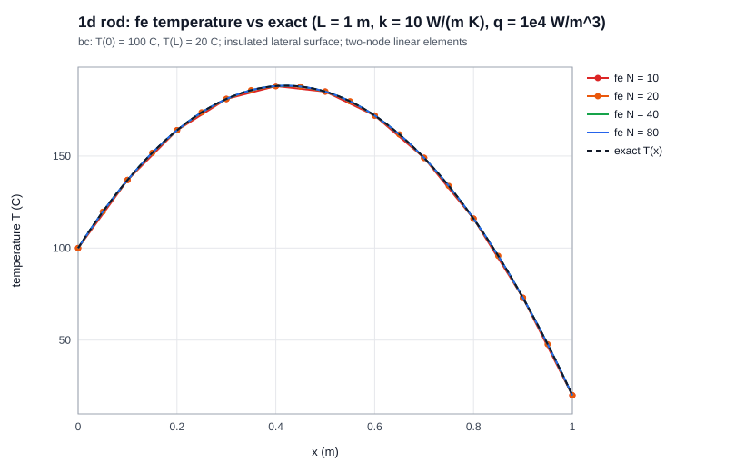
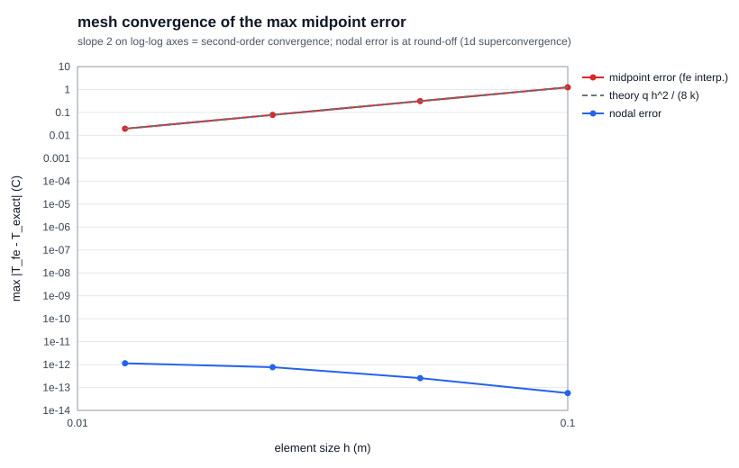
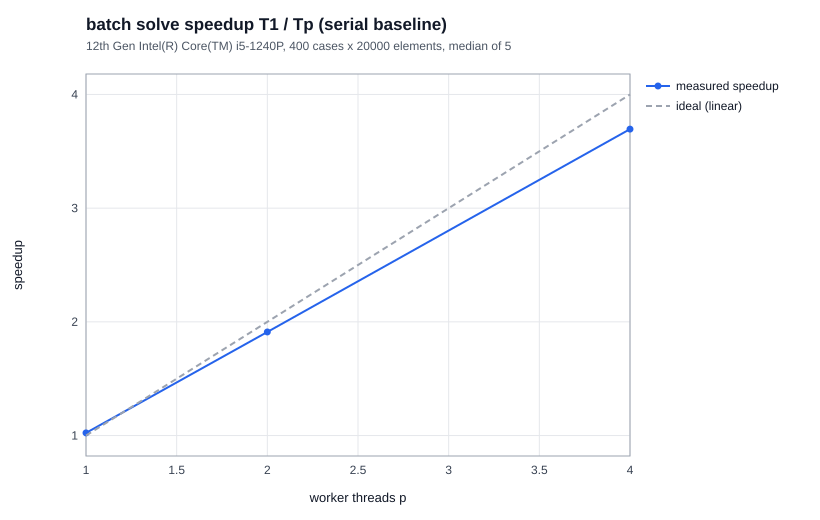
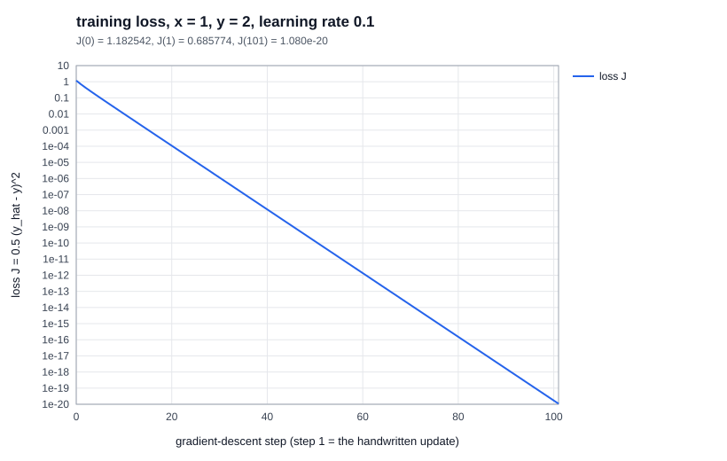

fig 4. block diagram (full pin/voltage table with connectors and pin assumptions: docs/embedded_design.md)
Launch.exe is a statically linked c++17 program. it starts a small http server on
127.0.0.1 (random free port), then opens the default browser. there is no install, no runtime to ship
(only windows system dlls, checked with objdump -p), nothing from the internet, and it is never reachable from the network.src/core holds every engineering module (fea, batch/threads, stl, csv, hardware, backprop) and knows
nothing about http. src/server is transport only: request parsing, routing, validation, background jobs.
src/frontend only draws. every number on screen is computed in c++.strong form −d/dx(kA dT/dx) = qA on 0 < x < L, T(0) = 100 °C, T(L) = 20 °C, with L = 1 m, A = 1e-4 m², k = 10 W/(m·K), q = 10⁴ W/m³. lateral surfaces insulated, properties constant, steady state.
weak form with linear shape functions N₁ = 1 − ξ, N₂ = ξ on an element of length h gives
ke = (kA/h)·[1 −1; −1 1] (W/K), fe = (qAh/2)·[1 1] (W)
summed into a tridiagonal global system. both ends are dirichlet: the known column is moved to the right-hand side and the row is replaced by the identity, which keeps the matrix symmetric. the system is solved with the thomas algorithm (o(N)).
units: si throughout; temperatures in °C (only differences enter the equation, so °C vs K is safe).
| N | h (m) | max midpoint error (°C) | q h²/(8k) | max nodal error (°C) | order |
|---|---|---|---|---|---|
| 10 | 0.1 | 1.25000000 | 1.25 | 5.7e-14 | – |
| 20 | 0.05 | 0.31250000 | 0.3125 | 2.6e-13 | 2.0000 |
| 40 | 0.025 | 0.07812500 | 0.078125 | 7.7e-13 | 2.0000 |
| 80 | 0.0125 | 0.01953125 | 0.01953125 | 1.1e-12 | 2.0000 |
the midpoint error uses fe interpolation (Ti + Ti+1)/2, not the exact value at nodes. it equals the interpolation-error bound h²/8·|T″| = qh²/(8k) to 1e-9 and falls 4× per halving: second order. the peak temperature is 188.2 °C at x = 0.42 m.


| setup | |
|---|---|
| cpu | intel core i5-1240P (hybrid: 4 performance + 8 efficiency cores) |
| cores | 12 physical / 16 logical |
| ram | 15.7 GiB |
| compiler | gcc 16.2.0 (winlibs mingw-w64 ucrt) |
| flags | -O3 -DNDEBUG -std=c++17, static link |
| workload | 400 independent rod solves × 20,000 elements; seed 20261101; k ∈ [1, 400] W/(m·K), q ∈ [1e3, 1e5] W/m³ |
| protocol | 1 warm-up + 5 measured runs per config, median; configs interleaved each round |
| timed | solve loop only; case generation, thread start-up, file i/o and rendering excluded |
implementation. WorkerPool is a fixed set of std::threads created once (outside the timer). a batch is
handed out one case at a time through an atomic counter (dynamic scheduling). each worker writes only into its own pre-allocated output
slot, so results stay in input order without locks. the serial path is a plain loop over the same fea::solve.
agreement. the first run of every configuration is compared node by node with the serial output: max |ΔT| = 0 °C in every session (limit 1e-8). each case is computed by identical code on one thread, so results are bit-identical.
launch-to-ready (process creation → listening socket, --ready-check, 5 runs): 54, 58, 61, 62, 68 ms. browser start-up comes on top.
| session | serial median (s) | p=1: median / speedup | p=2: median / speedup / eff. | p=4: median / speedup / eff. | notes |
|---|---|---|---|---|---|
| 2 | 0.5585 | 0.5458 / 1.02 | 0.2922 / 1.91 / 0.96 | 0.1511 / 3.70 / 0.92 | idle machine |
| 3 | 0.5401 | 0.5396 / 1.00 | 0.2904 / 1.86 / 0.93 | 0.1475 / 3.66 / 0.92 | idle machine |
| 1 | 0.6800 | 0.7573 / 0.90 | 0.2920 / 2.33 / 1.16 | 0.1428 / 4.76 / 1.19 | browser + backend active; serial reps 0.41–0.93 s |

tools/experiments).ascii stl and nodal csv (node_id,x_m,y_m,z_m,temperature_C) are parsed and validated in c++. the ui overlays both in
one 3d scene (rotate, pan, zoom, fit, view presets, opacity, wireframe) with the nodes coloured by temperature (inferno, viridis or
cool–warm), a legend in °C, an adjustable colour range and threshold, hover tooltips and click-to-pin inspection (node id, x/y/z in m, T in °C). examples are self-created; the csv is labelled synthetic in the file name, the provenance file and the ui. rejected
inputs (each with a line number and hint): empty or whitespace-only, binary stl (even with a “solid” header), wrong vertex count, nan/inf,
truncated, wrong or extra columns, duplicate ids, T < −273.15 °C, header-only. size limits: 256 MB, 2M triangles, 5M nodes.
| tested input | size | backend parse | full ui path |
|---|---|---|---|
| stl, 1.2M triangles | 156 MB | 1.1 s | 114 MB file: 4.9 s to rendered |
| stl, 2.16M triangles | 282 MB | rejected: size limit | – |
| csv, 1M nodes / 4M nodes | 42 / 171 MB | 1.1–1.6 s / 6.4 s | 33 MB, 1M nodes: 3.4 s; node pick instant |
| link | voltage / level | notes |
|---|---|---|
| usb → mcu board | 5 V in, 3.3 V i/o | cdc-acm com port, bus-powered |
| usb → fpga uart | 3.3 V bank | data only; board on own 5 V/2 A supply |
| jtag → fpga | follows target vref | adapter drives tck/tms/tdi, target drives tdo; one master per chain |
| swd → mcu (opt.) | 3.3 V vtref | on-board st-link jumpers off |
| mcu ↔ fpga uart | 3.3 ↔ vcco | level translator if the bank is 1.8 V |
| ground | single star point | connected before any signal cable |
jtag is a debug interface, not a compute board: it executes no user workload; it bridges usb to a target's test access port, its
i/o voltage follows the target's vref, and it speaks a different protocol from the uart boards. the c++ mocks share one
DeviceAdapter interface (discovery, capabilities, connect/disconnect, telemetry). but only the mcu and fpga report
can_run_workloads = true, and every reply and ui card is labelled simulated. recoverable failure: injecting
timeout_once makes the next operation wait 400 ms, return timeout, recoverable and fault the link. telemetry is
refused until a reconnect, which succeeds. integration plan (8 steps: schematics → one board at a time → ground first → read-only
software → jtag with target powered → link last → timeouts → reverse disconnect) and limitations are in docs/embedded_design.md.
| param | ∂J/∂θ analytic | central diff. (ε = 1e-6) | |err| | after step |
|---|---|---|---|---|
| w | −1.2094644752 | −1.2094644751 | 1.1e-10 | 0.6209464475 |
| b | −1.2094644752 | −1.2094644751 | 1.1e-10 | 0.1209464475 |
| v | −0.7106820475 | −0.7106820474 | 5.3e-11 | 1.0710682047 |
| c | −1.5378828427 | −1.5378828426 | 1.1e-10 | 0.1537882843 |
forward: z = 0.5, h = ŷ = 0.4621171573, J = 1.1825418190 → 0.6857737650 after the handwritten update. all gradients are negative because ŷ < y and each parameter raises ŷ, so descent increases all four. the c++ code uses the hand-derived chain rule (no autodiff); values match an independent python computation to 1e-14.

78 / 78 pass (ctest, output in docs/test_output.txt), and the release build compiles with
zero warnings under -Wall -Wextra -Wpedantic: fea 11 (assembly invariants, bcs, exact nodes, midpoint =
qh²/8k, order 2, peak location, invalid inputs), mesh study 7 (exact peak, error arches vanish at nodes, csv row counts, limits, cancel),
batch/threads 11 (seed reproducibility, ranges, serial = parallel for 1/2/3/4/7 workers, input order, cancel, pool reuse after exceptions,
worker capping, interleaved run order, single-cpu path), stl 12 and csv 8 (valid, crlf/bom/uppercase, every rejection class, limits, fixture
files), hardware 8 (discovery, jtag not a compute target, state machine, deterministic telemetry, timeout and recovery), backprop 6 (reference
values, gradient check, wrong-derivative challenge, update, monotone loss), transport/api 15 (url and header parsing, path traversal blocked,
400/404/409/422 with hints, binary payload layout, stl unit conversion, live and exported fea, job export, cancelled jobs publish nothing,
hardware recovery over http, evidence flags only for files that exist). every view was also exercised by hand in a browser (sliders, hover,
zoom, streaming, fault injection) at desktop and 375 px widths, and docs/walkthrough holds 14 timestamped frames captured in real
time from the running app (validation, a job's progress and cancel, a benchmark mid-run, timeout recovery, rejected files) with the backend log.
docs/ai_use_log.md with every error it made.